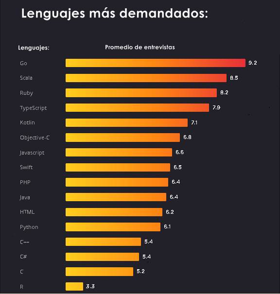

Actualmente estamos viviendo a nivel mundial una transformación digital, aunque es una frase de moda, refleja una verdad crítica: cada empresa es ahora una empresa de tecnología. Ya seas un banco, una aerolinea, un restaurante la inversión en el mejor talento de ingeniería de software no es una ambición futura, es una cuestión de supervivencia.
Toda la información y encuestas que te vamos a mostrar a continuación proviene de hired , ellos realizaron esta investigación principalmente en Nuevo York, Londres y Toronto ,si quieres ver tu mismo el reporte puedes ir a Hired.com
En el informe del año pasado sobre el estado de los ingenieros en software, los ingenieros con más demandas fueron los que tenían conocimientos en GO. Estos ingenieros se han vuelto cada vez más demandados este último año . El informe del año pasado nos mostró que los ingenieros con experiencia en go recibieron en promedio 9 solicitudes de entrevistas de trabajo a través de Hired, este año fue de 9.2
A continuación verás una lista de los lenguajes más demandados:
Podemos observar que go es el lenguaje más demandado, ¿pero qué significa esto?, esto no quiere decir que go sea el lenguaje más usado o el mejor, no , es simple la demanda es el equilibrio entre las empresas que buscan estos programadores y la cantidad existente de estos en el mercado, entonces podemos decir que actualmente existen más puestos vacantes que programadores de go.
En conclusión go sería un excelente lenguaje para aprender este año ya que go es un lenguaje relativamente joven y solo seguirá mejoran más y más lo que hará que las empresas lo sigan utilizando.
Lista de los lenguajes mas usados:
Indiscutiblemente el rey de estos últimos años se mantiene intacto en la sima, es cierto que muchos lenguajes han crecido y mejorado, y su uso se ha evidenciado dentro de las empresas pero JavaScript es popular por su versatilidad, algunos dicen que la magia que tiene JavaScript no la tienen otros lenguajes. En este sentido, con JavaScript puedes programar desde las cosas más básicas hasta las más complejas, las que requerirán que aprendas nuevas cosas de manera constante. ¡Te desafía!
Otro fuerte de JavaScript es su comunidad, la comunidad de JavasSript tiene por característica, además de su intensa actividad, la simpleza: se trata de una comunidad que no se mueve en base a “verdades absolutas”, sino que no deja de innovar y de valerse de las nuevas experiencias de sus integrantes